PYDERIN 미국 아마존 브랜드관 — 문안 검수 요청서
작성일 2026-11-11 · 기준 시안: design-v16 + 카테고리 4페이지(11~14번, 2026-11-11 추가) (미리보기 https://gimyedalm-collab.github.io/pyderin-store-preview/)
검수 순서
- 상품기획팀: 분홍 칸의 국문 원문을 기준으로, 소구 내용이 실제 제품에 적용된 내용인지 확인해 주세요. "상품기획팀 확인" 칸에 맞음 / 수정안을 적어 주시면 됩니다. 주황색 글씨는 특히 확인이 필요한 항목입니다.
- 해외영업팀: 상품기획팀 확인이 끝나 확정된 문안만 영문 검수를 요청드립니다. 지금의 영문은 가안입니다.
1. 헤더
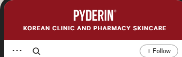
| 번호 | 위치 | 국문 원문 | 영문 (가안) | 근거·출처 | 확인 요청 사항 | 상품기획팀 확인 | 해외영업팀 영문 검수 |
|---|---|---|---|---|---|---|---|
| 1-1 | 로고 아래 한 줄 | 한국 병의원·약국 스킨케어 | KOREAN CLINIC AND PHARMACY SKINCARE | 미국 상세페이지의 기존 문구 "Korean Clinics & Pharmacy Skincare" | 브랜드 한 줄 소개로 써도 되는 표현인지 |
2. 대표 제품 (리프트 크림)
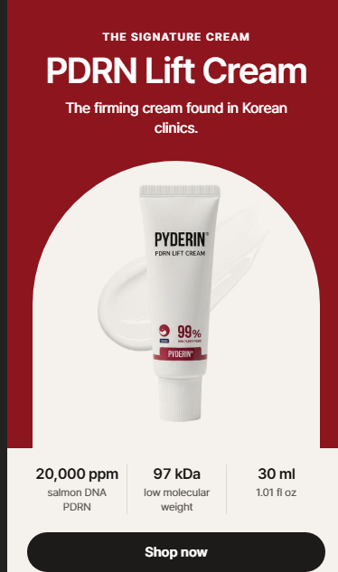
| 번호 | 위치 | 국문 원문 | 영문 (가안) | 근거·출처 | 확인 요청 사항 | 상품기획팀 확인 | 해외영업팀 영문 검수 |
|---|---|---|---|---|---|---|---|
| 2-1 | 꼬리표 | 대표 크림 | THE SIGNATURE CREAM | 사장님 지정: 메인 SKU = 리프트 크림 | |||
| 2-2 | 제품명 | PDRN 탄력 크림 | PDRN Lift Cream | 미국 상품명 | |||
| 2-3 | 한 문장 | 한국 병의원에서 쓰는 탄력 크림. | The firming cream found in Korean clinics. | 회사 소개서 5쪽 '병의원 전용라인'에 탄력 크림 포함 | "병의원에서 사용"이라고 써도 되는지 (입점·판매·시술 후 사용 중 정확한 표현) | ||
| 2-4 | 수치 1 | 20,000ppm 연어 DNA PDRN | 20,000 ppm salmon DNA PDRN | 미국 상품 페이지 제목, 소개서 'PDRN 2%' | 리프트 크림의 PDRN 함량이 20,000ppm(2%)이 맞는지 | ||
| 2-5 | 수치 2 | 97kDa 저분자 | 97 kDa low molecular weight | 원료사 시험성적서(평균 150bp) | 97kDa가 리프트 크림에 들어가는 원료에도 해당하는지 | ||
| 2-6 | 수치 3 | 30ml | 30 ml / 1.01 fl oz | 미국 상품 페이지 | |||
| 2-7 | 버튼 | 지금 구매 | Shop now | 아마존 허용 문구 |
3. 제형
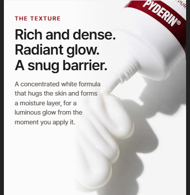
| 번호 | 위치 | 국문 원문 | 영문 (가안) | 근거·출처 | 확인 요청 사항 | 상품기획팀 확인 | 해외영업팀 영문 검수 |
|---|---|---|---|---|---|---|---|
| 3-1 | 꼬리표 | 제형 | THE TEXTURE | ||||
| 3-2 | 큰 글자 | 풍부한 농축감. 압도적인 광채. 탄탄한 밀착 보호막. | Rich and dense. Radiant glow. A snug barrier. | 상품기획팀 전달 문안(11/11): 실제 제품은 W/O 제형, 끈적임 있음. 기존 '가볍고 산뜻한' 문구 교체 | 영문에서 '압도적인'은 과장 표현 규정 때문에 'Radiant'로 낮췄습니다. 괜찮은지 | ||
| 3-3 | 설명 문장 | 피부를 쫀쫀하게 감싸 안는 고농축 백색 포뮬러가 보습막을 형성해 바르는 즉시 눈부신 극강의 윤광을 완성합니다. | A concentrated white formula that hugs the skin and forms a moisture layer, for a luminous glow from the moment you apply it. | 상품기획팀 전달 문안(11/11) | 미국 크림 상품 페이지 4번째 이미지에 'Non-sticky(끈적임 없음)' 문구가 남아 있습니다. 상품 페이지도 고칠지 |
4. 전문성 (병의원·약국)
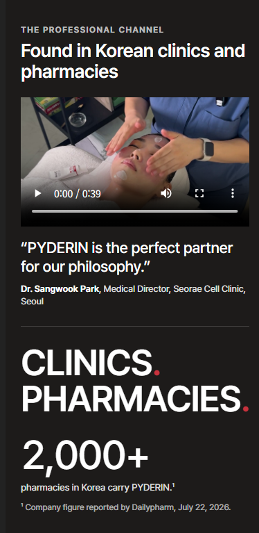
| 번호 | 위치 | 국문 원문 | 영문 (가안) | 근거·출처 | 확인 요청 사항 | 상품기획팀 확인 | 해외영업팀 영문 검수 |
|---|---|---|---|---|---|---|---|
| 4-1 | 꼬리표 | 전문 채널 | THE PROFESSIONAL CHANNEL | ||||
| 4-2 | 제목 | 한국 병의원과 약국에서 만나는 브랜드 | Found in Korean clinics and pharmacies | 소개서 병의원 라인, 약국 라인 | |||
| 4-3 | 인용문 | "피더린은 저희 철학과 가장 잘 맞는 파트너라고 생각합니다." | "PYDERIN is the perfect partner for our philosophy." | 서래셀의원 원장 인터뷰 원본 영상(국문 발언 그대로) | 인용과 실명·직함 표기에 대한 원장 동의 여부 | ||
| 4-4 | 인용 출처 | 박상욱 대표원장, 서래셀클리닉 | Dr. Sangwook Park, Medical Director, Seorae Cell Clinic | 기존 영문 인터뷰 영상 자막 표기 | 영문 이름·직함 표기가 맞는지 | ||
| 4-5 | 큰 글자 | 병의원. 약국. | CLINICS. PHARMACIES. | ||||
| 4-6 | 숫자 | 2,000곳 이상 — 피더린을 취급하는 한국 약국 | 2,000+ pharmacies in Korea carry PYDERIN. | 데일리팜 2026-07-22 기사의 회사 설명. 공식 사이트 약국 찾기는 952곳 | |||
| 4-7 | 각주 | 회사 발표 수치, 데일리팜 2026년 7월 22일 보도 | Company figure reported by Dailypharm, July 22, 2026. |
5. 라인업 제목
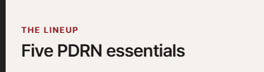
| 번호 | 위치 | 국문 원문 | 영문 (가안) | 근거·출처 | 확인 요청 사항 | 상품기획팀 확인 | 해외영업팀 영문 검수 |
|---|---|---|---|---|---|---|---|
| 5-1 | 꼬리표 · 제목 | 라인업 · PDRN 필수 5종 | THE LINEUP · Five PDRN essentials | 미국 등록 확인 5종 |
6. 상품 카드 5종
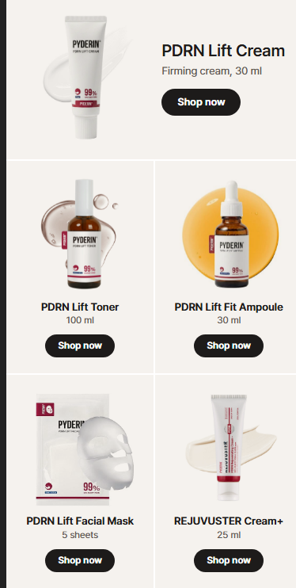
| 번호 | 위치 | 국문 원문 | 영문 (가안) | 근거·출처 | 확인 요청 사항 | 상품기획팀 확인 | 해외영업팀 영문 검수 |
|---|---|---|---|---|---|---|---|
| 6-1 | 카드 1 | PDRN 탄력 크림 · 탄력 크림, 30ml | PDRN Lift Cream · Firming cream, 30 ml | 미국 상품 페이지 | |||
| 6-2 | 카드 2 | PDRN 탄력 토너 · 100ml | PDRN Lift Toner · 100 ml | 미국 상품 페이지 | |||
| 6-3 | 카드 3 | PDRN 탄력 핏 앰플 · 30ml | PDRN Lift Fit Ampoule · 30 ml | 미국 상품 페이지 | |||
| 6-4 | 카드 4 | PDRN 탄력 마스크팩 · 5매 | PDRN Lift Facial Mask · 5 sheets | 미국 상품 페이지(43ml × 5) | |||
| 6-5 | 카드 5 | 리쥬부스터 크림+ · 25ml | REJUVUSTER Cream+ · 25 ml | 미국 상품 페이지 |
7. PDRN 근거
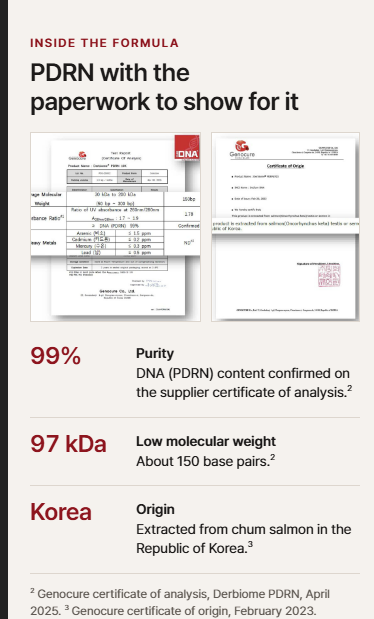
| 번호 | 위치 | 국문 원문 | 영문 (가안) | 근거·출처 | 확인 요청 사항 | 상품기획팀 확인 | 해외영업팀 영문 검수 |
|---|---|---|---|---|---|---|---|
| 7-1 | 꼬리표 · 제목 | 포뮬러 · 서류로 보여 주는 PDRN | INSIDE THE FORMULA · PDRN with the paperwork to show for it | 원료사 시험성적서·원산지 증명서 이미지를 그대로 공개해도 되는지 | |||
| 7-2 | 항목 1 | 순도 99% — 원료사 시험성적서에서 확인된 DNA(PDRN) 함량 | 99% Purity — DNA (PDRN) content confirmed on the supplier certificate of analysis. | 제노큐어 시험성적서(소개서 4쪽) | "순도 99%"가 원료 기준임을 이렇게 밝히는 표현이 맞는지. 제품 포장의 99%·90% 표기와의 관계 | ||
| 7-3 | 항목 2 | 97kDa 저분자 — 약 150 염기쌍 | 97 kDa Low molecular weight — About 150 base pairs. | 제노큐어 시험성적서 | 97kDa와 150bp를 같이 써도 되는지 | ||
| 7-4 | 항목 3 | 한국 — 대한민국 연어에서 추출 | Korea Origin — Extracted from chum salmon in the Republic of Korea. | 제노큐어 원산지 증명서 | 연어 종 표기(chum salmon)가 맞는지 | ||
| 7-5 | 각주 | 제노큐어 시험성적서(더비옴 PDRN, 2025년 4월), 제노큐어 원산지 증명서(2023년 2월) | Genocure certificate of analysis, Derbiome PDRN, April 2025. Genocure certificate of origin, February 2023. | 소개서 4쪽 | 원료사 이름과 원료명을 밝혀도 되는지 |
8. 사용 순서
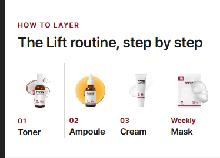
| 번호 | 위치 | 국문 원문 | 영문 (가안) | 근거·출처 | 확인 요청 사항 | 상품기획팀 확인 | 해외영업팀 영문 검수 |
|---|---|---|---|---|---|---|---|
| 8-1 | 꼬리표 · 제목 | 바르는 순서 · 리프트 루틴, 단계별로 | HOW TO LAYER · The Lift routine, step by step | ||||
| 8-2 | 순서 | 01 토너 → 02 앰플 → 03 크림 / 주 1회 마스크 | 01 Toner → 02 Ampoule → 03 Cream / Weekly Mask | 미국 상세페이지의 사용 순서 이미지 | 권장 사용 순서와 마스크 사용 주기(주 1회)가 맞는지 |
9. 심포지엄 영상
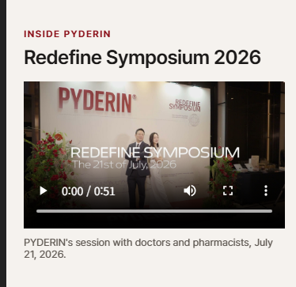
| 번호 | 위치 | 국문 원문 | 영문 (가안) | 근거·출처 | 확인 요청 사항 | 상품기획팀 확인 | 해외영업팀 영문 검수 |
|---|---|---|---|---|---|---|---|
| 9-1 | 꼬리표 · 제목 | 피더린 이야기 · 리디파인 심포지엄 2026 | INSIDE PYDERIN · Redefine Symposium 2026 | 행사 영상의 제목 화면 | |||
| 9-2 | 설명 | 의사·약사와 함께, 2026년 7월 21일. | With doctors and pharmacists, July 21, 2026. | 행사 영상, 데일리팜 기사 |
10. 마무리
| 번호 | 위치 | 국문 원문 | 영문 (가안) | 근거·출처 | 확인 요청 사항 | 상품기획팀 확인 | 해외영업팀 영문 검수 |
|---|---|---|---|---|---|---|---|
| 10-1 | 로고 아래 한 줄 | 한국 병의원·약국 스킨케어 | KOREAN CLINIC AND PHARMACY SKINCARE | 헤더와 동일 |
11. SHOP ALL 페이지
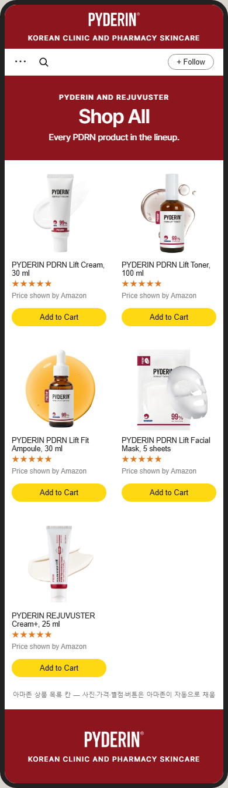
| 번호 | 위치 | 국문 원문 | 영문 (가안) | 근거·출처 | 확인 요청 사항 | 상품기획팀 확인 | 해외영업팀 영문 검수 |
|---|---|---|---|---|---|---|---|
| 11-1 | 꼬리표 · 제목 | 피더린과 리쥬부스터 · 전체 상품 | PYDERIN AND REJUVUSTER · Shop All | ||||
| 11-2 | 한 문장 | 라인업의 모든 PDRN 제품. | Every PDRN product in the lineup. | 미국 등록 확인 5종 | |||
| 11-3 | 상품 목록 | (아마존 상품 목록 칸 — 상품명·가격·별점은 아마존이 자동 표시) | (Amazon product grid) | 리쥬란·코스알엑스·조선미녀 Shop All과 같은 방식 | 이 페이지와 라인 페이지에서는 가격이 보입니다. 괜찮은지 |
12. PYDERIN 페이지 (병의원 라인)
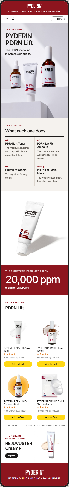
| 번호 | 위치 | 국문 원문 | 영문 (가안) | 근거·출처 | 확인 요청 사항 | 상품기획팀 확인 | 해외영업팀 영문 검수 |
|---|---|---|---|---|---|---|---|
| 12-1 | 꼬리표 · 제목 | 리프트 라인 · 피더린 PDRN 리프트 | THE LIFT LINE · PYDERIN PDRN Lift | 사장님 정정(11/11): 크림은 약국에서도 판매 → '병의원 라인' 이름은 쓰지 않음 | |||
| 12-2 | 한 문장 | 한국 피부과·의원에서 만나는 PDRN 라인. | The PDRN line found in Korean skin clinics. | 소개서 병의원 라인 4종 | 4종 모두 병의원 입점 제품이 맞는지. 약국에서도 파는 제품은 크림뿐인지 | ||
| 12-3 | 배너 사진 | (리프트 3종 스튜디오 연출 사진) | (photo) | NAS 디자인팀 제품 촬영 보정본 | |||
| 12-4 | 소제목 | 네 단계 · 각각의 역할 | THE FOUR STEPS · What each one does | ||||
| 12-5 | 01 토너 | 첫 단계. 수분을 채우고 다음 단계를 위해 피부를 정돈합니다. | The first layer. Hydrates and preps skin for the steps that follow. | 미국 상세페이지 사용 순서 | 토너 설명으로 맞는지 | ||
| 12-6 | 02 앰플 | 집중 단계. 가벼운 PDRN 세럼. | The concentrated step. A lightweight PDRN serum. | 미국 상품 페이지 | 앰플 설명으로 맞는지 ("가벼운" 제형 표현 포함) | ||
| 12-7 | 03 크림 | 대표 탄력 크림. | The signature firming cream. | 사장님 지정: 메인 SKU | |||
| 12-8 | 주 1회 마스크 | 주 1회 시트 마스크. 한 상자 5매. | The weekly sheet mask. Five sheets per box. | 미국 상품 페이지(43ml × 5) | 사용 주기 주 1회가 맞는지 | ||
| 12-9 | 큰 숫자 칸 | 대표 제품 PDRN 리프트 크림 · 연어 DNA PDRN 20,000ppm | THE SIGNATURE: PDRN LIFT CREAM · 20,000 ppm of salmon DNA PDRN | 미국 상품 페이지 제목 | 2-4번과 같은 확인 | ||
| 12-10 | 상품 목록 제목 | 라인 상품 · PDRN 리프트 | SHOP THE LINE · PDRN Lift | ||||
| 12-11 | 아래 이동 칸 | 한국 약국 라인 · 리쥬부스터 크림+ · 리쥬부스터 보기 | THE KOREAN PHARMACY LINE · REJUVUSTER Cream+ · Explore REJUVUSTER | 코스알엑스 라인 페이지 방식 |
13. REJUVUSTER 페이지 (약국 라인)
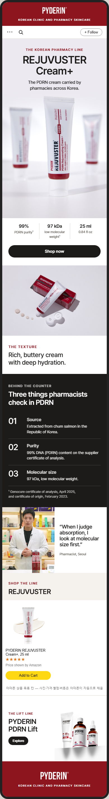
| 번호 | 위치 | 국문 원문 | 영문 (가안) | 근거·출처 | 확인 요청 사항 | 상품기획팀 확인 | 해외영업팀 영문 검수 |
|---|---|---|---|---|---|---|---|
| 13-1 | 꼬리표 · 제목 | 한국 약국 라인 · 리쥬부스터 크림+ | THE KOREAN PHARMACY LINE · REJUVUSTER Cream+ | 사장님 확인(11/11): 리쥬부스터는 약국 전용 | 미국 약국 판매로 오해되지 않게 'Korean'을 붙였습니다. 표현이 괜찮은지 | ||
| 13-2 | 한 문장 | 한국 전역의 약국에서 취급하는 PDRN 크림. | The PDRN cream carried by pharmacies across Korea. | 데일리팜 2026-07-22 | "전역" 표현이 맞는지 | ||
| 13-3 | 수치 3개 | PDRN 순도 99% · 97kDa 저분자 · 25ml | 99% PDRN purity · 97 kDa low molecular weight · 25 ml / 0.84 fl oz | 제노큐어 시험성적서, 미국 상품 페이지 | 리쥬부스터 크림+ 원료에도 99%·97kDa가 해당하는지, 용량 표기 | ||
| 13-4 | 제형 사진 칸 | 제형 · 깊은 보습의 풍부한 버터 같은 크림. | THE TEXTURE · Rich, buttery cream with deep hydration. | 미국 리쥬부스터 상품 페이지 4번째 이미지의 문구 | |||
| 13-5 | 소제목 | 카운터 뒤에서 · 약사가 PDRN에서 확인하는 세 가지 | BEHIND THE COUNTER · Three things pharmacists check in PDRN | 약사 인터뷰(베리뉴약국·별하약국) 발언 | 약사 발언을 일반화해 써도 되는지 | ||
| 13-6 | 01 출처 | 대한민국 연어에서 추출. | Source — Extracted from chum salmon in the Republic of Korea. | 제노큐어 원산지 증명서 | 리쥬부스터 크림+도 같은 원료를 쓰는지 | ||
| 13-7 | 02 순도 | 원료사 시험성적서의 DNA(PDRN) 함량 99%. | Purity — 99% DNA (PDRN) content on the supplier certificate of analysis. | 제노큐어 시험성적서 | 리쥬부스터 크림+ 원료에도 해당하는지 | ||
| 13-8 | 03 분자 크기 | 97kDa 저분자. | Molecular size — 97 kDa, low molecular weight. | 제노큐어 시험성적서 | 리쥬부스터 크림+ 원료에도 해당하는지 | ||
| 13-9 | 각주 | 제노큐어 시험성적서(2025년 4월), 원산지 증명서(2023년 2월) | Genocure certificate of analysis, April 2025, and certificate of origin, February 2023. | 소개서 4쪽 | |||
| 13-10 | 약사 한마디 | "흡수력을 볼 때 저는 분자 크기를 먼저 봅니다." — 약사, 서울 | "When I judge absorption, I look at molecular size first." — Pharmacist, Seoul | 명동K약국 약사 인터뷰(발언 대상은 리쥬부스터) | 약사 이름 표기 여부, 사용 동의 | ||
| 13-11 | 아래 이동 칸 | 리프트 라인 · 피더린 PDRN 리프트 · 피더린 보기 | THE LIFT LINE · PYDERIN PDRN Lift · Explore PYDERIN |
14. ABOUT US 페이지
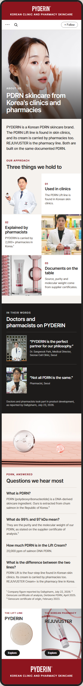
| 번호 | 위치 | 국문 원문 | 영문 (가안) | 근거·출처 | 확인 요청 사항 | 상품기획팀 확인 | 해외영업팀 영문 검수 |
|---|---|---|---|---|---|---|---|
| 14-1 | 꼬리표 · 제목 | 브랜드 소개 · 한국 병의원과 약국에서 온 PDRN 스킨케어 | ABOUT US · PDRN skincare from Korea's clinics and pharmacies | 소개서 병의원·약국 라인 | |||
| 14-2 | 첫 화면 사진 | (연구실 연출 컷 — 유리 기구 사이의 리쥬부스터) | (photo) | NAS 디자인팀 제품 촬영본, 사장님 선택(11/11) | |||
| 14-3 | 소개 글 | 피더린은 한국의 PDRN 스킨케어 브랜드입니다. PDRN 리프트 라인은 피부과·의원에서 만날 수 있고, 크림은 약국에서도 취급합니다. 리쥬부스터는 약국 라인입니다. 두 라인 모두 같은 서류로 확인된 PDRN을 씁니다. | PYDERIN is a Korean PDRN skincare brand. The PDRN Lift line is found in skin clinics, and its cream is carried by pharmacies too. REJUVUSTER is the pharmacy line. Both are built on the same documented PDRN. | 소개서, 원료사 서류 | 두 라인이 같은 PDRN 원료를 쓰는지 | ||
| 14-4 | 소제목 | 우리의 방식 · 지키는 세 가지 | OUR APPROACH · Three things we hold to | 리쥬올 About 페이지 방식 | |||
| 14-5 | 01 | 병의원에서 씁니다 — PDRN 리프트 라인은 한국 피부과·의원에서 만날 수 있습니다. | Used in clinics — The PDRN Lift line is found in Korean skin clinics. | 소개서 5쪽 | 2-3번과 같은 확인 | ||
| 14-6 | 02 | 약사가 설명합니다 — 피더린은 한국 약국 2,000곳 이상에서 취급합니다. | Explained by pharmacists — PYDERIN is carried by 2,000+ pharmacies in Korea. | 데일리팜 2026-07-22 | 메인 4번 칸과 같은 표기 | ||
| 14-7 | 03 | 서류를 공개합니다 — 출처, 순도, 분자량은 원료사 증명서에 따릅니다. | Documents on the table — Source, purity and molecular weight come from supplier certificates. | 제노큐어 서류 | |||
| 14-8 | 소제목 | 그들의 말 | IN THEIR WORDS | 메디큐브 기기 페이지의 전문가 3명 방식 | 두 분 모두 사용 동의가 필요. 동의가 없는 분은 뺍니다 | ||
| 14-9 | 한마디 1 | "피더린은 저희 철학과 가장 잘 맞는 파트너라고 생각합니다." — 박상욱 대표원장, 서래셀클리닉 | "PYDERIN is the perfect partner for our philosophy." — Dr. Sangwook Park, Medical Director, Seorae Cell Clinic | 원장 인터뷰 원본 영상 | 4-3, 4-4번과 같은 확인 | ||
| 14-10 | 한마디 2 | "다 같은 PDRN이 아닙니다." — 약사, 서울 | "Not all PDRN is the same." — Pharmacist, Seoul | 별하약국 약사 인터뷰 | 약사 이름 표기 여부, 사용 동의 | ||
| 14-11 | 각주 | 의사와 약사가 제품 개발 과정에 참여했습니다(데일리팜 2026년 7월 23일 보도). | Doctors and pharmacists took part in product development, as reported by Dailypharm, July 23, 2026. | 데일리팜 2026-07-23 기사 | 참여 범위(어떤 제품, 어떤 역할)와 이 표현을 써도 되는지 | ||
| 14-12 | 소제목 | PDRN 묻고 답하기 · 자주 듣는 질문 | PDRN, ANSWERED · Questions we hear most | 리쥬란 PDRN 페이지의 묻고 답하기 방식 | |||
| 14-13 | 질문 1 | PDRN이 무엇인가요? — PDRN(폴리데옥시리보뉴클레오타이드)은 DNA에서 얻는 스킨케어 성분입니다. 피더린의 PDRN은 대한민국 연어에서 추출합니다. | What is PDRN? — PDRN (polydeoxyribonucleotide) is a DNA-derived skincare ingredient. Ours is extracted from chum salmon in the Republic of Korea. | 제노큐어 원산지 증명서 | 성분 설명 표현이 맞는지 | ||
| 14-14 | 질문 2 | 99%와 97kDa는 무슨 뜻인가요? — 원료사 시험성적서에 적힌 우리 PDRN의 순도와 분자량입니다. | What do 99% and 97 kDa mean? — They are the purity and the molecular weight of our PDRN, as stated on the supplier certificate of analysis. | 제노큐어 시험성적서 | 7-2, 7-3번과 같은 확인 | ||
| 14-15 | 질문 3 | 리프트 크림에는 PDRN이 얼마나 들어 있나요? — 연어 DNA PDRN 20,000ppm. | How much PDRN is in the Lift Cream? — 20,000 ppm of salmon DNA PDRN. | 미국 상품 페이지 제목 | 2-4번과 같은 확인. 다른 브랜드와 비교하지 않고 숫자만 적었습니다 | ||
| 14-16 | 질문 4 | 두 라인은 무엇이 다른가요? — PDRN 리프트는 한국 피부과·의원에서 만나는 네 단계 라인이고, 크림은 약국에서도 취급합니다. 리쥬부스터 크림+는 한국의 약국 라인입니다. | What is the difference between the two lines? — PDRN Lift is the four-step line found in Korean skin clinics. Its cream is carried by pharmacies too. REJUVUSTER Cream+ is the pharmacy line in Korea. | 소개서 | 12월 추가 리스팅 뒤 바뀔 내용인지 | ||
| 14-17 | 아래 이동 칸 | 리프트 라인 피더린 / 한국 약국 라인 리쥬부스터 · 보기 | THE LIFT LINE PYDERIN / THE KOREAN PHARMACY LINE REJUVUSTER · Explore |
영상 자막 (4번 칸 병원·약국 영상, 39초)
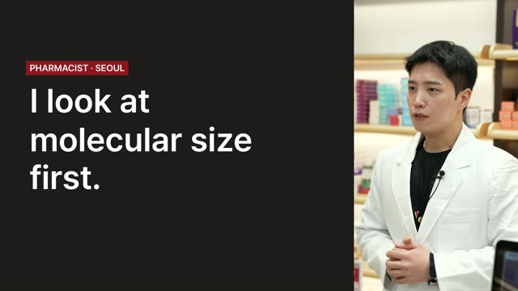
| 번호 | 말하는 사람 | 국문 원문 (실제 발언) | 영문 자막 (가안) | 확인 요청 사항 | 상품기획팀 확인 | 해외영업팀 영문 검수 |
|---|---|---|---|---|---|---|
| V-1 | 원장 | 서울 서래셀 클리닉 대표원장 박상욱입니다. | I'm Dr. Sangwook Park, Medical Director of Seorae Cell Clinic. | |||
| V-2 | 원장 | 피더린은 저희 철학과 가장 잘 맞는 파트너라고 생각합니다. | The perfect partner for our philosophy. | |||
| V-3 | 약사 (별하약국) | 근데 사실 다 같은 PDRN이 아니라는 거 아시나요? | Not all PDRN is the same. | |||
| V-4 | 약사 (명동K약국) | 그래서 흡수력을 볼 때 저는 분자 크기를 먼저 봅니다. | I look at molecular size first. | |||
| V-5 | 약사 (베리뉴약국) | PDRN 크림을 선택할 때에는 첫 번째는 원료 출처, 두 번째는 순도, 세 번째는 분자 크기. | Source. Purity. Molecular size. | |||
| V-6 | 약사 (별하약국) | 97킬로달톤의 저분자 PDRN이라 | 97 kDa low-molecular PDRN. | |||
| V-7 | 약사 (웰약국) | 국내 연어에서 추출한 고순도 99% 원료를 사용하고 | 99% pure, extracted from Korean salmon. | |||
| V-8 | 약사 (제일그랜드 온누리약국) | 원산지와 전성분 데이터를 모두 공개하는 | Origin and full ingredient data, disclosed. | "모두 공개"가 사실인지, 어디에 공개돼 있는지 | ||
| V-9 | 끝 화면 | 한국 병의원과 약국에서 만나는 | FOUND IN KOREAN CLINICS AND PHARMACIES |